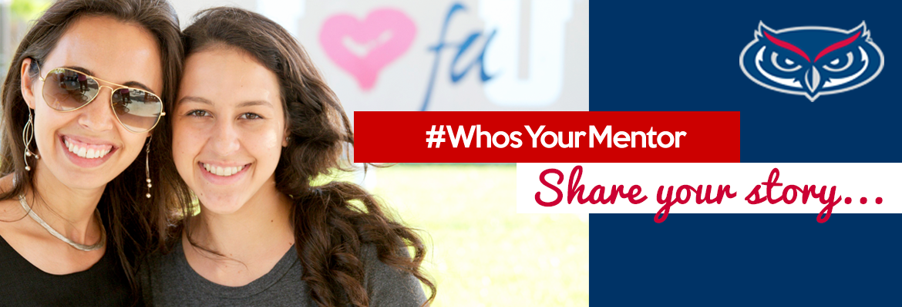
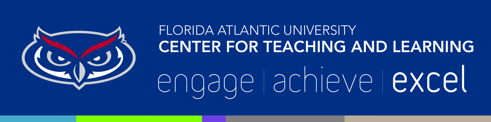
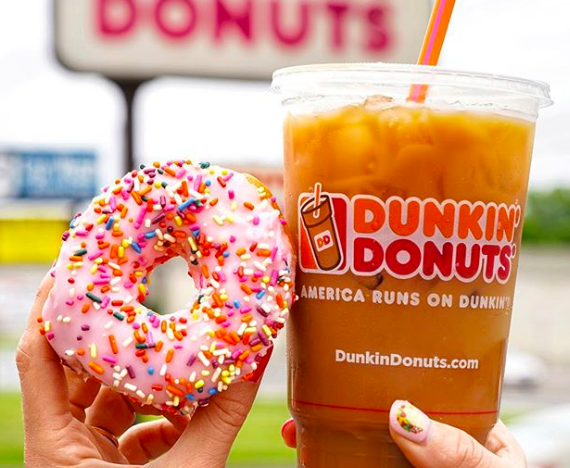
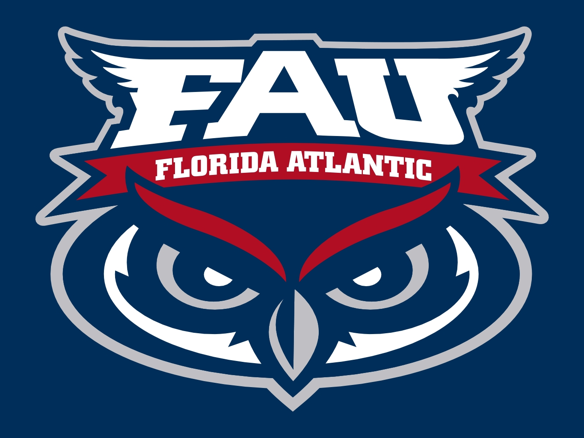

Caren Youssef
Hello, my name is Caren Youssef, and I am a Computer Science major with a minor in Mathematics. Keep scrolling to find out more about me!
Connect with me:
Experience
IT Intern
Recently, I began working as an Information Technology Intern at FAU. During my short time there, I learned a lot more about how my field could look in real-life. I learned how to interact with different users, image PC's, reset networking ports, set up printers, and much more! IT really is a rapidly growing and widely encompassing field.
HSI Mentor
This semester I also started working as an HSI Mentor at FAU as part of their mentoring partnership with PBSC. This program is meant to help undergraduate students, who want to pursue an engineering degree, successfully pass their pre-requisite courses at PBSC and transfer over to FAU. As a mentor, we are also encouraged to bring these students to FAU events and games in order to motivate them to continue their education.
Supplemental Instruction Leader
Last semester, I was one of two Supplemental Instruction (SI) Leaders who tutored for Intro to Programming in C (COP2220). In addition to tutoring, I also conducted 3 weekly, 50-minute, sessions to help students better understand the material and practice their code. This really helped me improve my own coding skills and challenged me to work along the students on the more tedious programs.
Barista
Before college, I worked at Dunkin'Donuts for about 2 years. As a coffee addict, I loved this job, not only because of the occassional free coffee, but because I also learned about the ingredients of each drink, and I became more aware of what I was putting into my body. Nonetheless, the donuts and coffee were always an appreicated pick-me-up.
Education
Florida Atlantic University
GPA: 3.88
West Boca Raton High School
GPA: 3.98
Skills
- Fast Typer
- Efficient Debugger & Programmer
- On time
- Reliable & Neat
Interests
; ; ;
; ;
Apart from being a Computer Science student, I like to explore life through food and traveling. I genuinely enjoy traveling to new destinations, and discovering new cities as I walk around lost in a new place. I also love trying out new foods and indulging in tasty treats from different parts of the world.
Aside from the States, I have been to Canada, Egypt, and Paris. I plan to visit Dubai, Spain, and Denmark one day as well.
Achievements & Awards
- Dean's List for Fall 2017 and Fall 2018
- Secretary of Engineering Student Council
- Member of Upsilon Pi Epsilon (UPE)- Computer Science Honor Society
- Top 35% of all Engineering and Informatics majors at FAU
- Certificate of Excellence in recognition of- Tutor with Highest Percentage of Average Student Visits for Engineering Courses
- Women in Engineering and Computer Sience Program- Certificate of Participation in Recognition of Active Involvement
- Top 5% of 2017 West Boca Raton High Graduating Class